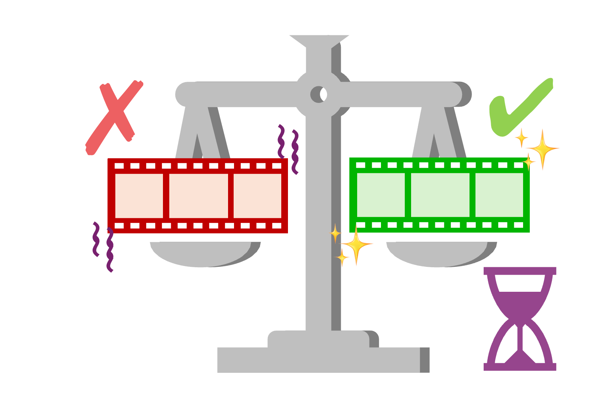
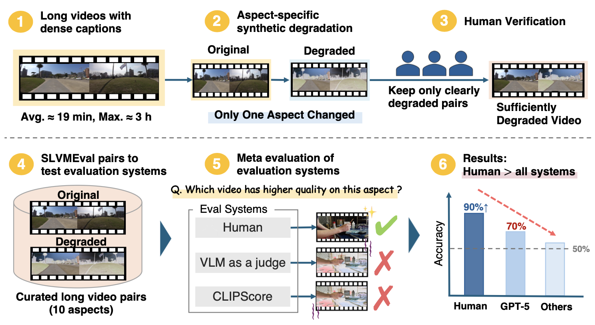
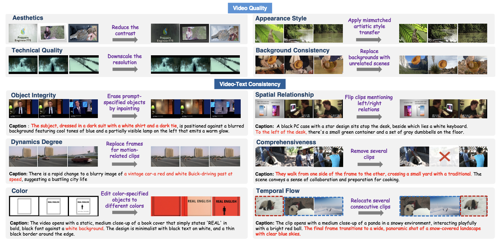

We introduce SLVMEval, a benchmark for meta-evaluating text-to-video (T2V) evaluation systems. SLVMEval focuses on assessing these systems on long videos of up to 10,486 seconds (approximately 3 hours). Our benchmark targets a fundamental requirement: whether systems can accurately judge video quality in settings that are easy for humans to assess. We adopt a pairwise comparison-based meta-evaluation framework. Building on dense video captioning datasets, we synthetically degrade source videos to create controlled "high-quality vs. low-quality" pairs across 10 distinct aspects. We then use crowdsourcing to filter and retain only those pairs in which the degradation is clearly perceptible, thereby establishing the final testbed. Using this testbed, we assess the reliability of existing evaluation systems in ranking these pairs. Our experiments show that human evaluators identify the better long video with 84.7%–96.8% accuracy, while in 9 of the 10 aspects, the accuracy of these systems falls short of human judgment, revealing weaknesses in text-to-long video evaluation.
SLVMEval is designed to probe whether evaluation systems possess the minimum capability required for T2V model development. We target long videos — spanning several minutes to nearly three hours — which are precisely the regimes where current automatic systems struggle most. By constructing paired videos that differ in exactly one specified quality dimension, we enable precise, fine-grained meta-evaluation.

SLVMEval significantly extends existing meta-evaluation benchmarks by targeting substantially longer videos and providing human-annotated pairwise judgments.
| Benchmark | Human Annot. | Aspects | Videos | Unique Prompts | Max Duration (sec) | Avg. Prompt Len. (chars) |
|---|---|---|---|---|---|---|
| UVE-Bench | ✓ | 15 | 1,045 | 293 | 6.1 | 73.68 |
| VBench | ✓ | 16 | 21,110 | 968 | 3.3 | 41.32 |
| VBench Long | ✗ | 16 | N/A | 944 | N/A | 41.00 |
| SLVMEval (ours) | ✓ | 10 | 3,932 | 1,461 | 10,486.0 | 57,883.52 |
SLVMEval covers 10 evaluation aspects organized into two categories. For each aspect, we construct paired videos by applying a controlled synthetic degradation to the original, keeping all other factors unchanged.
| # | Category | Aspect | Degradation |
|---|---|---|---|
| 1 | Video Quality | Aesthetics | Reduce the contrast of selected clips to assess frame-level aesthetic quality. |
| 2 | Video Quality | Technical Quality | Downscale the resolution to detect low-resolution artifacts. |
| 3 | Video Quality | Appearance Style | Apply mismatched artistic style transfer (e.g., oil painting, manga, sketch) to selected clips. |
| 4 | Video Quality | Background Consistency | Replace original backgrounds with random landscape images to break temporal visual stability. |
| 5 | Video Quality | Object Integrity | Erase prompt-specified objects via inpainting to remove key scene elements. |
| 6 | Video-Text Consistency | Color | Edit colors of prompt-specified objects to different colors, breaking color consistency with the description. |
| 7 | Video-Text Consistency | Dynamics Degree | Replace motion-containing clips with static middle frames to reduce dynamics described in the prompt. |
| 8 | Video-Text Consistency | Comprehensiveness | Remove several clips from the original video, reducing coverage of all prompt-described events. |
| 9 | Video-Text Consistency | Spatial Relationship | Horizontally flip clips mentioning left/right relations, inverting spatial consistency. |
| 10 | Video-Text Consistency | Temporal Flow | Relocate several consecutive clips to random positions, breaking the described event order. |
Examples of original and degraded video pairs from SLVMEval across different evaluation aspects. Each pair is constructed so that the degradation is clearly perceptible to human annotators.

Accuracy (%) of each baseline system on SLVMEval. Numbers are accuracy % ± 95% CI. Blue bold = best per aspect; green = second best. Chance level = 50%.
Human evaluators achieve 84.7%–96.8% accuracy across all 10 aspects, while in 9 of the 10 aspects, the accuracy of automatic evaluation systems falls short of human judgment.
| System | Video Quality | Video-Text Consistency | |||||||||
|---|---|---|---|---|---|---|---|---|---|---|---|
| Aesthetics | Technical Quality |
Appearance Style |
Background Consistency |
Object Integrity |
Color | Dynamics Degree |
Comprehen siveness |
Spatial Relationship |
Temporal Flow |
||
| Video-based | |||||||||||
| GPT-5 | 90.1±2.5 | 85.8±4.2 | 88.9±2.5 | 98.9±0.8 | 72.0±6.2 | 84.3±3.5 | 35.3±3.6 | 51.3±4.5 | 59.7±4.4 | 50.3±4.1 | |
| GPT-5-mini | 84.0±3.0 | 48.1±6.1 | 78.0±3.2 | 95.2±1.6 | 66.5±6.5 | 69.4±4.5 | 31.5±3.5 | 45.7±4.5 | 51.1±4.5 | 43.7±4.1 | |
| Qwen3 | 55.7±4.1 | 51.9±6.1 | 55.3±3.9 | 49.7±3.7 | 38.5±6.7 | 48.4±4.9 | 50.0±3.8 | 51.7±4.5 | 51.7±4.5 | 50.2±4.1 | |
| Text-based | |||||||||||
| GPT-5 | 74.8±3.6 | 46.2±6.1 | 81.1±3.1 | 83.8±2.7 | 68.0±6.5 | 68.9±4.5 | 43.1±3.8 | 50.6±4.5 | 47.0±4.5 | 43.5±4.1 | |
| GPT-5-mini | 75.0±3.6 | 53.8±6.1 | 79.6±3.2 | 81.1±2.9 | 65.5±6.6 | 71.8±4.4 | 43.8±3.8 | 50.6±4.5 | 51.1±4.5 | 41.2±4.0 | |
| Qwen3 | 51.6±4.1 | 50.0±6.1 | 72.4±3.5 | 73.0±3.3 | 51.0±6.9 | 61.0±4.7 | 48.6±3.9 | 52.7±4.5 | 51.7±4.5 | 52.9±4.5 | |
| CLIPScore | 56.4±5.8 | 72.3±7.7 | 53.2±5.5 | 68.6±4.8 | 76.0±8.4 | 66.2±6.5 | 51.7±5.4 | 57.4±6.3 | 55.1±6.3 | 50.5±5.8 | |
| VideoScore | 52.5±5.8 | 33.8±8.3 | 65.7±5.3 | 71.2±4.7 | 66.0±9.3 | 33.8±6.5 | 52.7±4.9 | 34.5±6.1 | 49.6±6.4 | 46.3±5.8 | |
| 🌟 Human | 96.5±2.1 | 91.8±4.7 | 95.2±2.4 | 95.0±2.3 | 86.6±6.7 | 96.8±2.4 | 95.9±2.1 | 84.7±4.6 | 88.2±4.1 | 86.6±4.0 | |
@inproceedings{matsuda2026slvmeval,
title = {SLVMEval: Synthetic Meta Evaluation Benchmark for Text-to-Long Video Generation},
author = {Ryosuke Matsuda and Keito Kudo and Haruto Yoshida and Nobuyuki Shimizu and Jun Suzuki},
booktitle = {Proceedings of the IEEE/CVF Conference on Computer Vision and Pattern Recognition},
year = {2026},
}This website is adapted from VDocRAG and Nerfies, licensed under a Creative Commons Attribution-ShareAlike 4.0 International License.